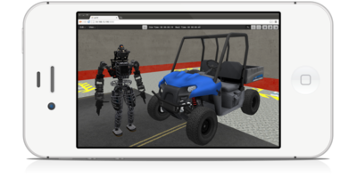

<link rel="import" href="../../bower_components/polymer/polymer.html">

<dom-module id="gz-home">
  <template>
    <style>
      :host {
        display: block;
      }

      paper-material {
        padding: 1em;
        margin: 1em;
      }

      paper-card {
        padding: 1em;
      }

     .half-horizontal {
       width: 49%;
       display: inline-block;
       text-align: center;
     }

    </style>

    <paper-material elevation="3" class="half-horizontal">
      <h1>CLOUD-HOSTED ROBOT SIMULATION</h1>
      <p>BROUGHT TO YOU BY: <a href="http://osrfoundation.org">OPEN SOURCE ROBOTICS FOUNDATION</a></p>
    </paper-material>

    <paper-material elevation="3" class="horizontal">
      <div class="half-horizontal">
        <h4>WHAT IS CLOUDSIM?</h4>
        <p> CloudSim provides robot simulation as a web application. Through
        the combination of advanced simulation software and cloud computing,
        CloudSim makes it easy to simulate robots and environments. In
        addition to simulation management, CloudSim offers the ability to
        visualize and interact with the simulated 3D worlds right in your
        browser. Try out CloudSim and discover a low-cost way to use robot
        simulation technology. </p>
      </div>
      <div class="half-horizontal">
        
      </div>
    </paper-material>

    <paper-material elevation="3" class="horizontal">
      <div class="half-horizontal">
        
      </div>
      <div class="half-horizontal">
        <h4>HOW DOES CLOUDSIM WORK?</h4>
        <p>CloudSim handles all the work of provisioning cloud-machines and
        launching simulation. All that you have to do is select what you want
        to simulate. Once a simulation machine is up and running, you can
        visualize the 3D world in your browser and programmatically interface
        to simulation through a secure network connection.</p>
      </div>
    </paper-material>

    <paper-material elevation="3" class="horizontal">
      <div class="half-horizontal">
        <h4>WHAT CAN I DO WITH CLOUDSIM?</h4>
        <p> CloudSim gives you a simple interface to cloud-hosted robot
        simulation software. Through the CloudSim interface, you can control
        instances of simulation, view all the simulations that you have run in
        the past, and easily manage payment options. Here, we list just a few
        uses for CloudSim. </p>
      </div>
      <div class="horizontal half-horizontal">
        <paper-card>
          <div class="col-xs-4 text-center">
            <h4>
              
            </h4>
            <h6>Continuous <br> Integration</h6>
          </div>
        </paper-card>
        <paper-card>
          <div class="col-xs-4 text-center">
            <h4>
              
            </h4>
            <h6>Classroom &<br> Collaboration</h6>
          </div>
        </paper-card>
        <paper-card>
          <div class="col-xs-4 text-center">
            <h4>
              
            </h4>
            <h6>Parallel<br>Experimentation</h6>
          </div>
        </paper-card>
      </div>
    </paper-material>

  </template>

  <script>
  (function() {
    'use strict';

    Polymer({
      is: 'gz-home',
      // Attached
      attached: function() {
        console.log('gz-home widget [' + this.title + '] attached!')
      },
    });
  })();
  </script>
</dom-module>
